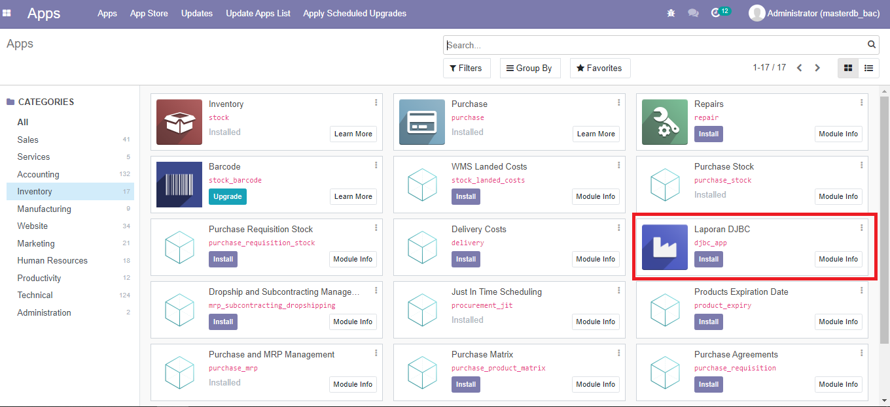
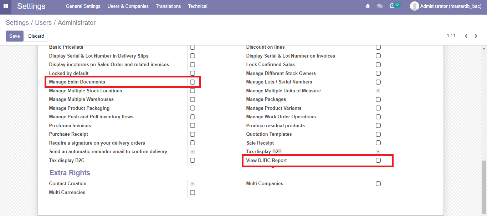
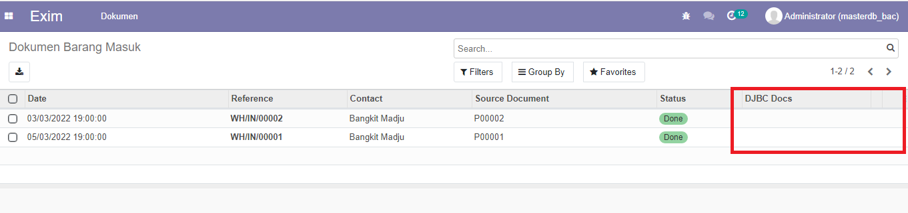
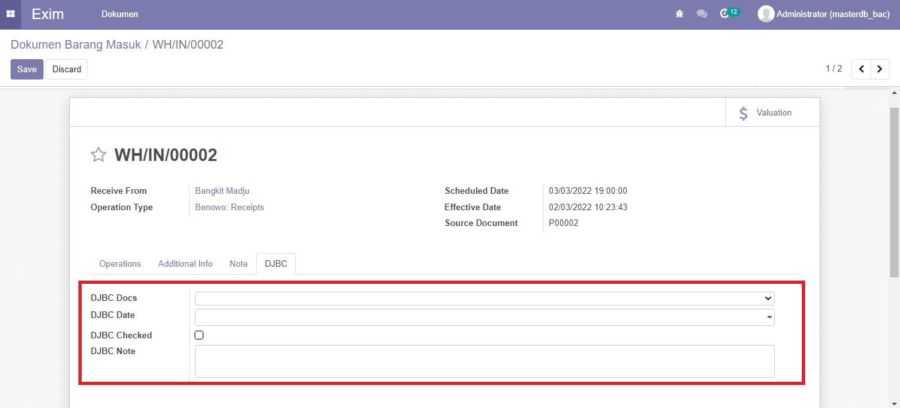
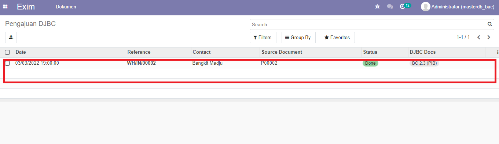
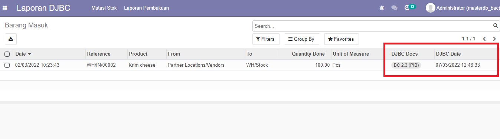

Deskripsi
Modul Laporan DJBC ini merupakan sistem IT Inventory yg masih berupa prototype untuk pengajuan memperoleh fasilitas kawasan industri berikat, bisa digunakan untuk memulai pengembangan lebih lanjut, karena project ini masih sederhana dan perlu pengumpulan kebutuhan data lebih lanjut.
Penggunaan
- Install Addon 
- Setting akses menu 
-
Tampilan menu modul

- Tampilan dokumen yg diajukan 
- Tampilan update jenis dokumen 
- Tampilan Dokumen yg telah diajukan 
-
Tampilan Menu user DJBC

- Tampilan dokumen yang telah diajukan 